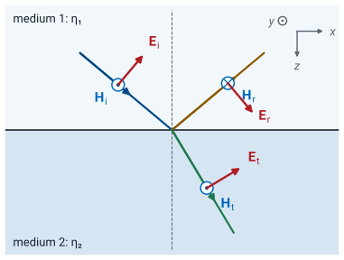
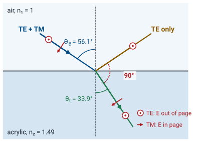
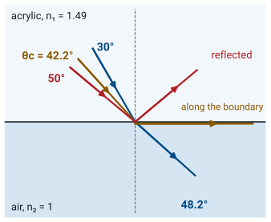
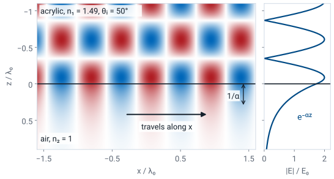
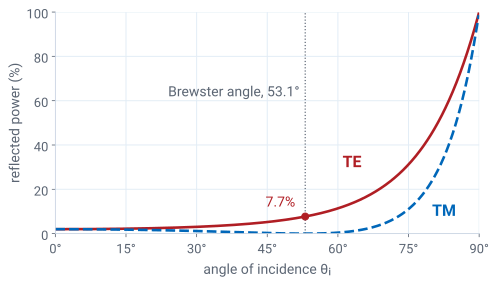

L40 - Oblique Incidence II#
Oblique Incidence II
Today we find the TM coefficients, the angle where TM reflection vanishes, and the angle past which every wave reflects.
Lesson 40 · Module 4: Dynamic Fields · Maj Ellis · Dr. Neil Rogers
Learning Objectives
- I can determine the reflection and transmission of UPW at a boundary for Transverse Electric (TE) and Transverse Magnetic (TM) waves, using boundary conditions.
Lesson 39 split a plane wave that meets a boundary at an angle into a TE part and a TM part, found the directions of the reflected and transmitted waves from phase matching, and derived the TE coefficients. Today we derive the TM coefficients the same way. Two results follow that the TE wave does not have. At one angle, the Brewster angle, the TM wave does not reflect at all. And when a wave in a material with a larger refractive index meets the boundary beyond the critical angle, Snell’s law has no real answer, and all of the incident power reflects. Both angles are measurable at the bench, which is what Lesson 41’s lab does.
Where We Were
Lesson 39 put the boundary at \(z = 0\), with medium 1 at \(z < 0\) and the plane of incidence in the \(xz\) plane. Phase matching, the requirement that all three waves vary at the same rate along the boundary, gave the law of reflection and Snell’s law, with the refractive index \(n = \sqrt{\mu_r\epsilon_r}\). Both hold for any polarization. The tangential boundary conditions of Lessons 24 and 31 then gave the TE reflection and transmission coefficients, which reduce to Lesson 38’s at normal incidence. For a wave in air striking acrylic, \(n_2 = 1.49\), at \(45^\circ\), the TE coefficient was \(\Gamma_\text{TE} = -0.299\).
The Fields of a TM Wave

The phases \(\psi_i\), \(\psi_r\), and \(\psi_t\) are Lesson 39’s; for example, \(\psi_i = \beta_1\left(x\sin\theta_i + z\cos\theta_i\right)\). In a TM wave the magnetic field is perpendicular to the plane of incidence, along \(\pm\hat{\mathbf{y}}\), and the electric field lies in the plane. The incident electric field must be perpendicular to \(\hat{\mathbf{k}}_i = \hat{\mathbf{x}}\sin\theta_i + \hat{\mathbf{z}}\cos\theta_i\), and \(\hat{\mathbf{x}}\cos\theta_i - \hat{\mathbf{z}}\sin\theta_i\) is: their dot product is \(\sin\theta_i\cos\theta_i - \cos\theta_i\sin\theta_i = 0\). The magnetic field again comes from Lesson 37’s \(\widetilde{\mathbf{H}} = \hat{\mathbf{k}}\times\widetilde{\mathbf{E}}/\eta\):
using \(\hat{\mathbf{x}}\times\hat{\mathbf{z}} = -\hat{\mathbf{y}}\) and \(\hat{\mathbf{z}}\times\hat{\mathbf{x}} = \hat{\mathbf{y}}\). The transmitted wave has the same form with \(\theta_t\), \(\beta_2\), \(\eta_2\), and amplitude \(\tau_\text{TM}E_0\).
The TM Sign Convention
For the TE wave, the reflected electric field could only point along \(\pm\hat{\mathbf{y}}\), and we took \(+\hat{\mathbf{y}}\) as its reference direction. For the TM wave, the reflected electric field lies in the plane of incidence, perpendicular to \(\hat{\mathbf{k}}_r = \hat{\mathbf{x}}\sin\theta_i - \hat{\mathbf{z}}\cos\theta_i\), and there are two opposite directions to call positive. We choose the one whose component along the boundary, \(\hat{\mathbf{x}}\cos\theta_i\), points the same way as the incident field’s. With this choice, a positive \(\Gamma_\text{TM}\) means the reflected and incident tangential electric fields add at the boundary, and at normal incidence \(\Gamma_\text{TM}\) becomes Lesson 38’s \(\Gamma\). The magnetic field follows from
so the reflected \(\widetilde{\mathbf{H}}\) points into the page, as the previous frame’s figure shows. This is the convention of Ellingson’s section 5.7. Some optics texts choose the other reference direction for the reflected electric field, which reverses the sign of \(\Gamma_\text{TM}\); the magnitude, and every power fraction, is the same in both.
The TM Boundary Conditions
At \(z = 0\), tangential \(\widetilde{E}_x\) and \(\widetilde{H}_y\) give:
Phase matching cancels the common exponential factor in each condition. The tangential electric field is now the \(x\) component. In medium 1 it is \(E_0\cos\theta_i\) from the incident wave plus \(\Gamma_\text{TM}E_0\cos\theta_i\) from the reflected wave; in medium 2 it is \(\tau_\text{TM}E_0\cos\theta_t\). Dividing by \(E_0\) gives the first condition. The tangential magnetic field is the whole magnetic field, along \(\hat{\mathbf{y}}\): \(E_0/\eta_1\) from the incident wave and \(-\Gamma_\text{TM}E_0/\eta_1\) from the reflected wave in medium 1, and \(\tau_\text{TM}E_0/\eta_2\) in medium 2. Dividing by \(E_0\) gives the second. As in Lesson 39, phase matching makes every exponential on the boundary the same, so both conditions hold at every \(x\).
The TM Coefficients
The second condition gives \(\tau_\text{TM} = (\eta_2/\eta_1)(1 - \Gamma_\text{TM})\). Substituting it into the first and multiplying by \(\eta_1\) gives the first line, with one unknown. Expanding gives
and collecting the \(\Gamma_\text{TM}\) terms gives the reflection coefficient. Then
and multiplying by \(\eta_2/\eta_1\) gives the transmission coefficient. Unlike the TE case, \(\tau_\text{TM}\) is not \(1 + \Gamma_\text{TM}\): the first condition gives \(\tau_\text{TM} = (1 + \Gamma_\text{TM})\cos\theta_i/\cos\theta_t\), because only the tangential part of each electric field has to match. At normal incidence both cosines are one and the TM coefficients reduce to Lesson 38’s, as the TE coefficients did. For air into acrylic at \(45^\circ\), with \(\theta_t = 28.33^\circ\), \(\eta_1 = 376.7\ \Omega\), and \(\eta_2 = 252.8\ \Omega\), \(\Gamma_\text{TM} = -0.090\) and \(\tau_\text{TM} = 0.731\). The TM wave reflects \(0.8\%\) of its power, against the TE wave’s \(9.0\%\).
The Brewster Angle
\(\Gamma_\text{TM} = 0\) when \(\eta_2\cos\theta_t = \eta_1\cos\theta_i\). With \(\mu_1 = \mu_2 = \mu_0\):
For air into acrylic, \(\theta_B = 56.1^\circ\).
The numerator of \(\Gamma_\text{TM}\) is a difference, so it can vanish. For nonmagnetic materials \(\eta = \eta_0/n\), and the condition becomes \(n_1\cos\theta_t = n_2\cos\theta_i\). Snell’s law gives \(\sin\theta_t = (n_1/n_2)\sin\theta_i\), so \(\cos^2\theta_t = 1 - (n_1/n_2)^2\sin^2\theta_i\). Squaring the condition and substituting, with \(r = n_2/n_1\) and \(s = \sin^2\theta_i\),
using \(1/r^2 - r^2 = (1 - r^2)(1 + r^2)/r^2\). Then \(\cos^2\theta_i = 1/(1 + r^2)\), and the ratio gives \(\tan^2\theta_i = r^2\): the Brewster angle is \(\theta_B = \tan^{-1}(n_2/n_1)\). At that angle \(\sin\theta_B = r\cos\theta_B\), so Snell’s law gives \(\sin\theta_t = \sin\theta_B/r = \cos\theta_B\), which means \(\theta_t = 90^\circ - \theta_B\). For air into acrylic, \(\theta_B = \tan^{-1}1.49 = 56.1^\circ\) and \(\theta_t = 33.9^\circ\).
At the Brewster Angle

The reflected wave is purely TE: \(\Gamma_\text{TE} = -0.379\), so \(14.4\%\) of the TE power reflects.
At the Brewster angle the reflected and transmitted rays are perpendicular. A wave that contains both polarizations, such as sunlight or the light from a lamp, reflects only its TE part, so the electric field of the reflected light lies perpendicular to the plane of incidence. The TE wave has no such angle. Setting \(\Gamma_\text{TE} = 0\) for nonmagnetic materials requires \(n_1\cos\theta_i = n_2\cos\theta_t\); squaring Snell’s law, \(n_1^2\sin^2\theta_i = n_2^2\sin^2\theta_t\), and adding the square of this condition gives \(n_1^2 = n_2^2\), which holds only when the two materials are the same. A wave leaving acrylic for air has its own Brewster angle, \(\tan^{-1}(1/1.49) = 33.9^\circ\), which is the transmitted angle above: the TM wave passes through the boundary without reflection in both directions.
Reflection of Both Polarizations
The widget computes both reflection coefficients from today’s formulas for two nonmagnetic materials. The plot shows \(\vert\Gamma_\text{TE}\vert\) and \(\vert\Gamma_\text{TM}\vert\) against the angle of incidence, with the Brewster angle marked; Show phase plots their angles instead, and the vertical axis label changes to match. In the ray diagram, tags name the TE and TM reflected rays, and the width of each grows with the power it carries. The default is air over acrylic, \(\epsilon_{r2} = 2.22\), at \(45^\circ\), where the readouts match the example: \(\Gamma_\text{TE} = 0.299\angle 180^\circ\) and \(\Gamma_\text{TM} = 0.090\angle 180^\circ\). Drag \(\theta_i\) through \(56.1^\circ\) and watch the TM ray vanish and the phase of \(\Gamma_\text{TM}\) jump from \(180^\circ\) to \(0^\circ\) as the coefficient passes through zero. Then turn on Swap media, so the wave starts in the acrylic. Past \(42.2^\circ\) the transmitted ray disappears and both magnitudes reach one.
The Critical Angle

For acrylic into air, \(\theta_c = 42.2^\circ\).
When the wave starts in the material with the larger refractive index, \(n_1 > n_2\), Snell’s law,
bends the transmitted wave away from the normal, as the \(30^\circ\) ray in the figure shows: it leaves the acrylic at \(48.2^\circ\). As \(\theta_i\) grows, \(\theta_t\) reaches \(90^\circ\), and the transmitted wave travels along the boundary. That happens at the critical angle, where \(\sin\theta_t = 1\): \(n_1\sin\theta_c = n_2\). For acrylic into air, \(\theta_c = \sin^{-1}(1/1.49) = 42.2^\circ\). For nonmagnetic materials, \(n_2/n_1 = \sqrt{\epsilon_{r2}/\epsilon_{r1}}\). Beyond the critical angle, \(\sin\theta_t > 1\) and no real angle satisfies Snell’s law; the \(50^\circ\) ray in the figure has no transmitted ray. Phase matching still holds, because it came from the boundary conditions and not from geometry, so we keep the transmitted field’s phase along the boundary, \(\beta_2\sin\theta_t = \beta_1\sin\theta_i\), and ask what \(\cos\theta_t\) must be. A wave entering a material with a smaller index, \(n_1 < n_2\), always has \(\sin\theta_t < \sin\theta_i \le 1\), so it has no critical angle.
Total Internal Reflection
Beyond the critical angle, \(\sin^2\theta_t > 1\), so \(1 - \sin^2\theta_t\) is negative and \(\cos\theta_t\) is imaginary. Of its two square roots we keep \(-jq\), with \(q > 0\), for the reason on the next frame: it is the root that makes the transmitted field decay away from the boundary instead of growing. The coefficients still follow from the same boundary conditions, so we substitute \(\cos\theta_t = -jq\). The numerator and denominator of \(\Gamma_\text{TE}\) are complex conjugates, so they have the same magnitude, and \(\vert\Gamma_\text{TE}\vert = 1\). The same is true of \(\Gamma_\text{TM}\), whose numerator is \(-\eta_2 jq - \eta_1\cos\theta_i\) and whose denominator is \(-\eta_2 jq + \eta_1\cos\theta_i\). All of the incident power reflects: this is total internal reflection. Only the phase of each coefficient depends on the angle, and the two phases differ. For acrylic into air at \(50^\circ\), \(q = 0.550\), \(\Gamma_\text{TE} = 1\angle 59.8^\circ\), and \(\Gamma_\text{TM} = 1\angle{-76.2^\circ}\). An optical fiber guides light by total internal reflection at the boundary between its core and the cladding around it, which has a slightly smaller index.
The Evanescent Field

The transmitted field of the TE wave was \(\tau_\text{TE}E_0\ e^{-j\beta_2\left(x\sin\theta_t + z\cos\theta_t\right)}\). Phase matching makes \(\beta_2\sin\theta_t = \beta_1\sin\theta_i\), so the field still travels along the boundary at the incident wave’s rate. With \(\cos\theta_t = -jq\), the \(z\) factor becomes \(e^{-j\beta_2 z(-jq)} = e^{-\beta_2 q z}\), which decays into medium 2; the other root would grow without bound as \(z\) increases, which no finite source can produce. The field in medium 2 is an evanescent field. It travels along the boundary and falls to \(1/e\) of its value at the boundary in a distance \(1/\alpha\). For acrylic into air at \(50^\circ\), with \(\beta_2 = 2\pi/\lambda_0\), \(1/\alpha = \lambda_0/(2\pi\times 0.550) = 0.289\lambda_0\), which is \(188\) nm for red light at \(650\) nm. The figure plots the TE field at one instant: the incident and reflected waves form a pattern in the acrylic, and the field in the air fades within about a third of a wavelength; the arrow along the boundary marks the direction the evanescent field travels, and the side panel plots how its amplitude falls with \(z\).
The evanescent field carries power along the boundary but none away from it. Faraday’s law in phasor form, \(\nabla\times\widetilde{\mathbf{E}} = -j\omega\mu\widetilde{\mathbf{H}}\) (Lesson 35), gives the magnetic field of \(\widetilde{\mathbf{E}}_t = \hat{\mathbf{y}}\widetilde{E}_y\):
The \(z\) component of Lesson 38’s time-average Poynting vector, \(\tfrac{1}{2}\text{Re}\left[\widetilde{\mathbf{E}}\times\widetilde{\mathbf{H}}^*\right]\), is the power that flows away from the boundary:
because \(\widetilde{H}_x\) is a quarter cycle out of phase with \(\widetilde{E}_y\). The \(x\) component, \(\tfrac{1}{2}\text{Re}\left[\widetilde{E}_y\widetilde{H}_z^*\right] = \beta_1\sin\theta_i\vert\widetilde{E}_y\vert^2/(2\omega\mu)\), is positive: the field carries power along the boundary. With no power entering medium 2, all of it returns in the reflected wave, which is why \(\vert\Gamma\vert = 1\).
Worked Example: Acrylic Both Ways
Case |
Result |
|---|---|
Air into acrylic, \(45^\circ\) |
\(\Gamma_\text{TE} = -0.299\), \(\Gamma_\text{TM} = -0.090\) |
Air into acrylic |
\(\theta_B = 56.1^\circ\) |
Acrylic into air |
\(\theta_B = 33.9^\circ\), \(\theta_c = 42.2^\circ\) |
Acrylic into air, \(30^\circ\) |
\(\Gamma_\text{TE} = 0.318\), \(\Gamma_\text{TM} = 0.069\) |
Worked example — the four numbers the Incidence Lab measures
Acrylic is nonmagnetic with \(n = 1.49\) at visible wavelengths. A beam in air strikes a flat face of an acrylic block.
At \(45^\circ\), Lesson 39 found \(\theta_t = 28.33^\circ\) and \(\Gamma_\text{TE} = -0.299\). For the TM wave, the numerator of \(\Gamma_\text{TM}\) is \(252.8\times0.8802 - 376.7\times0.7071 = 222.6 - 266.4 = -43.8\) and the denominator is \(222.6 + 266.4 = 489.0\), so \(\Gamma_\text{TM} = -0.090\).
The Brewster angle from air is \(\tan^{-1}1.49 = 56.1^\circ\). At that angle the TM beam passes into the block without reflection, and the transmitted beam travels at \(33.9^\circ\) from the normal.
Inside the block, the beam reaches the far face. Going from acrylic into air, the Brewster angle is \(\tan^{-1}(1/1.49) = 33.9^\circ\), and the critical angle is \(\sin^{-1}(1/1.49) = 42.2^\circ\). At \(30^\circ\), below both, Snell’s law gives \(\sin\theta_t = 1.49\sin 30^\circ = 0.745\), so \(\theta_t = 48.2^\circ\). With \(\eta_1 = 252.8\ \Omega\) and \(\eta_2 = 376.7\ \Omega\),
and the same steps give \(\Gamma_\text{TM} = 0.069\). Both are positive: going into a material with a smaller index, the reflected tangential field adds to the incident one, as for a load larger than \(Z_0\) in Lesson 6. Past \(42.2^\circ\) the far face reflects the whole beam.
Why Polarized Sunglasses Work

Near \(\theta_B\), glare from water or a road is mostly TE: its \(\widetilde{\mathbf{E}}\) is horizontal.
Sunlight contains both polarizations equally. For light striking a horizontal surface, the plane of incidence is vertical, because it contains the vertical normal, so the TE electric field is horizontal. Water has \(n = 1.33\), and its Brewster angle is \(\tan^{-1}1.33 = 53.1^\circ\). At that angle the TE part reflects \(7.7\%\) of its power and the TM part reflects none, and over a wide range of angles around it the reflection is mostly TE. Polarized sunglasses contain a filter that passes a vertical electric field and blocks a horizontal one, so they block most of the glare and pass most of the light from the rest of the scene. Tilting your head 90° turns the filter and brings the glare back, which is a quick way to check a pair of lenses.
Summary
Symbol / idea |
What it is |
Result |
|---|---|---|
TM convention |
Reflected \(\widetilde{\mathbf{E}}\) tangential part along the incident one |
\(\Gamma_\text{TM} \to \Gamma\) of Lesson 38 at \(\theta_i = 0\) |
\(\Gamma_\text{TM}\) |
Reflected over incident electric field |
\(\frac{\eta_2\cos\theta_t - \eta_1\cos\theta_i}{\eta_2\cos\theta_t + \eta_1\cos\theta_i}\) |
\(\tau_\text{TM}\) |
Transmitted over incident electric field |
\(\frac{2\eta_2\cos\theta_i}{\eta_2\cos\theta_t + \eta_1\cos\theta_i}\) |
Brewster angle |
\(\Gamma_\text{TM} = 0\), nonmagnetic materials |
\(\tan\theta_B = n_2/n_1\), \(\theta_B + \theta_t = 90^\circ\) |
TE |
No Brewster angle |
|
Critical angle |
\(n_1 > n_2\) and \(\theta_t = 90^\circ\) |
\(\sin\theta_c = n_2/n_1\) |
Total internal reflection |
\(\theta_i > \theta_c\) |
\(\vert\Gamma_\text{TE}\vert = \vert\Gamma_\text{TM}\vert = 1\) |
Evanescent field |
Transmitted field past \(\theta_c\) |
Decays as \(e^{-\alpha z}\), \(\alpha = \beta_2\sqrt{(n_1/n_2)^2\sin^2\theta_i - 1}\) |
Acrylic, \(n = 1.49\) |
\(\theta_B = 56.1^\circ\) from air, \(\theta_c = 42.2^\circ\) into air |
Practice
Where This Is Going
Lesson 41: the Incidence Lab, which measures reflection against angle for both polarizations.
With today’s lesson the course has followed a wave from a transmission line in Module 1 to a plane wave in free space and across a boundary at any angle. The coefficients at oblique incidence have the form of Lesson 6’s line reflection coefficient, with an intrinsic impedance and a cosine in place of each line impedance. Lesson 41 is the Incidence Lab, where we measure how much of each polarization reflects as the angle changes and find the Brewster angle at the bench.
Before Lesson 41, review sections 5.6 and 5.7 of Ellingson, Electromagnetics, Vol. 2.